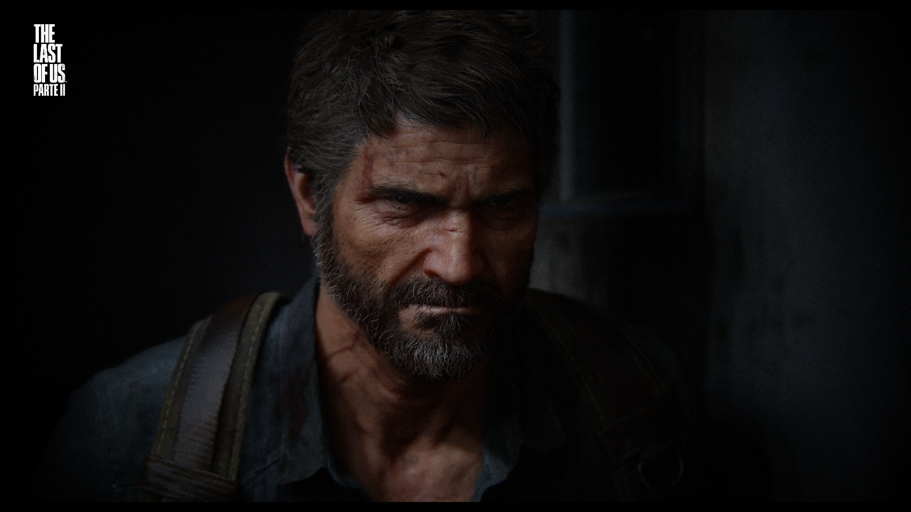
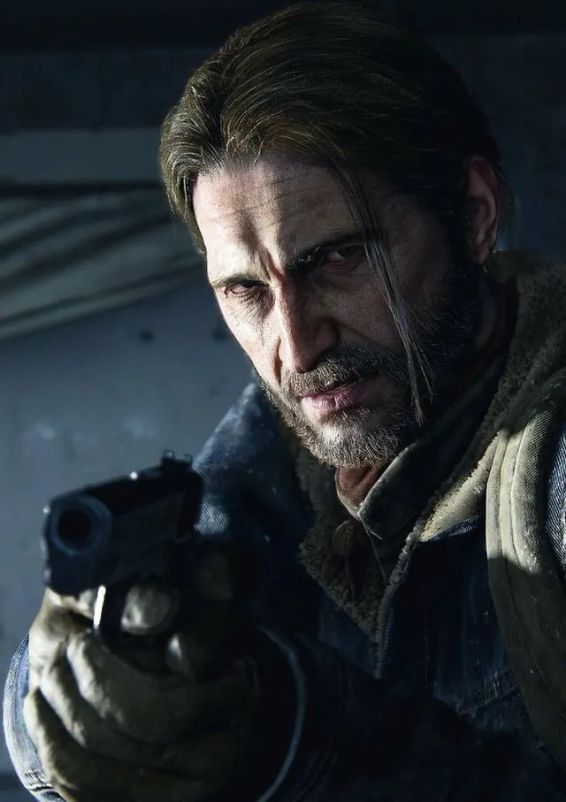

Joel
Um sobrevivente experiente que atravessa um mundo devastado ao lado de Ellie.
Quem atravessa o mundo de The Last of Us, nos jogos e na série.

Um sobrevivente experiente que atravessa um mundo devastado ao lado de Ellie.
Uma jovem que acompanha Joel em uma jornada que mudará a vida dos dois.

Irmão de Joel e um personagem importante na história.
Líder dos Vagalumes, grupo que busca uma cura. Interpretada por Merle Dandridge nos jogos e na série.
Parceira de Joel no contrabando. Jogos: Annie Wersching. Série: Anna Torv.
Filha de Joel, cuja história abre o primeiro jogo. Jogos: Hana Hayes. Série: Nico Parker.
Personagem central de Part II. Jogos: Laura Bailey. Série: Kaitlyn Dever.
Amiga próxima de Ellie em Part II. Jogos: Shannon Woodward. Série: Isabela Merced.